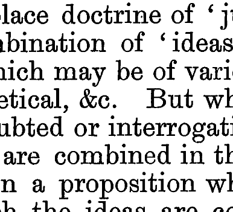

Sobre creencias, emociones y verdad
Una co-relatoría sobre The Psychology of Belief
Martín Buenahora Bonilla
Notica sobre la diagramación del artículo
- La tipografía es de tipo “escocés”, usado para impresiones de baja calidad (Jardí, 2015).
- Tiene espaciado francés. Hay más espacio al principio de cada frase.
- &c. En el inglés antiguo & era el et latino.

Ver para creer: La creencia como la actitud “por defecto”
Las creencias es una actitud automática
- “We shall presently see that we never disbelieve anything except for the reason that we believe something else which contradicts the first thing” [énfasis mío] (James, 1889, p. 322).
- James se apoya en Spinoza y su ejemplo del caballo halado para exponer su punto.
- En Spinoza todas las ideas son afirmativas, nunca neutrales, por lo que serían o verdaderas o falsas (Spinoza, 2018, EIIp32-35).
- Al menos por lo visto hasta ahora, James no parece dar razón de esta suposición, más allá de decir que la duda debe ser justificada.
El nacimiento de un angelito
- Pero supongamos el caso de un ángel recién creado, que de un modo u otro es expuesto a la luz de una vela.
- En este momento estamos suponiendo que no tiene ningún conocimiento previo.
- Este es un estado caracterizado por la quietud, al igual que lo es la creencia y la anti-creencia (disbelief). ¿Podemos caracterizar el estado del ángel de uno u otro modo?
- Cuando el ángel percibe por primera vez la vela va a pensar en esta como presente, idea en principio distinta (aunque no contradictoria) con lo que este conoce (que no es nada).
Las experiencias pasadas nos pueden hacer dudar de nuestros sentidos
- Otro caso interesante es el de una persona que ha sufrido una ilusión en el pasado: p. ej. ha visto un palo “quebrarse” cuando lo sumergen por la mitad.
- Podemos decir que tiene la creencia de que “los sentidos ocasionalmente nos fallan”.
- Ahora, supongamos que esta persona cree ver a alguien que conoce a lo lejos, pero dada su creencia sobre los sentidos duda de si es este o no.
- En este caso, la creencia que lleva a la duda no es “Mi amigo está en otra ciudad”, o alguna equivalente, por lo que no sería contradictoria.
- Por esto parece que la creencia de “este es mi amigo” debe incluir la creencia de que mi percepción no me miente, o más bien de que “estoy viendo a mi amigo”.
Las emociones para James
La percepción es necesaria para tener al menos algo de objetividad
- “Before I can think you to mean my world, you must affect my world; before I can think you to mean much of it, you must affect much of it; and before I can be sure you mean it as I do, you must affect it just as I should if I were in your place. Then I, your critic, will gladly believe that we are thinking, not only of the same reality, but that we are thinking it alike, and thinking a great part of its extent” (James, 1885, p. 36).
- En esto podemos encontrar un paralelo con Peirce:
- Entre algo más se aleja de nuestros sentidos, más incierto nos parece: recordemos la cuestión de la luz como línea recta vs los átomos (Peirce, 1891).
- Para Peirce y James, la percepción parece ser el punto de partida de las cosmovisiones y la objetividad.
El papel de las emociones
- James menciona que para que consideremos algo como real este debe aparecer como algo interesante e importante.
- Siguiendo a Hume, añade que entre más estrecha sea su relación con la percepción, más nos conmoverá.
- “Among all sensations, the most belief-compelling are those productive of pleasure or of pain. […] The quality of arousing emotion, of shaking, moving us or inciting us to action, has as much to do with our belief in an object's reality as the quality of giving pleasure or pain. In MIND ix. 188, I have sought to show that our emotions probably owe their pungent quality to the bodily sensations which they involve” (James, 1889, p. 341).
Las emociones según James
- Para James las emociones como el miedo, el amor, la alegría, etc., se reducen a un conjunto de sensaciones físicas (Goldie, 2000).
- Es decir, lo que hace que una emoción sea tal son las sensaciones corporales que la acompañan y caracterizan (Goldie, 2000).
- Tomando como ejemplo un animal que nos da miedo, si quitamos la sensación del temblar de las piernas, de la piel de gallina, del castañetear de los dientes, etc., no queda nada de emoción, sino un juicio a secas (cold judgement) de “este animal es peligroso”.
- Una cualidad importante es que siempre somos conscientes de los cambios que se dan en nuestro cuerpo, por lo que siempre que tenemos una emoción debemos saber que están presentes (Goldie, 2000).
- Es por esto que las emociones tienen una fuerza tan grande sobre nuestras creencias, porque parten de aquello que determina nuestra realidad primaria.
El problema de esta concepción
- Goldie (2000) le plantea tres críticas a la postura reduccionista de James:
- Hay casos en los que las emociones producen cambios corporales y no nos damos cuenta: cuando un soldado se orina del miedo o cuando la adrenalina previene que sintamos dolor.
- Hay emociones como el orgullo o el lamento (grief) en las que no parece haber ninguna sensación corporal que las determine.
- La corporalidad no es capaz de explicar la intencionalidad de las emociones, sino que requieren de algo más para tener un objeto.
Tengo miedo, Dave: ¿los robots pueden tener emociones?
- De todos modos, podemos plantear si desde la concepción de James los robots tienen emociones.
- Con excepción del problema de la consciencia (bien chiquito que es), parece que los demás elementos pueden estar:
- Si hay una serie de sensores (en la mayoría de computadores tenemos la cámara, el micrófono, el ratón, el teclado, etc.), se podría dar el paralelo con las sensaciones corporales.
- Claramente los computadores pueden almacenar valores, como lo puede ser “esta persona es peligrosa”.
- Según la caracterización de James hecha por Goldie, con esto tendríamos todos los elementos necesarios para hablar de emociones.

El problema de la realidad y la verdad
Esta sección está basada en un comentario de Russell a otro texto (Pragmatism, a new name for old ways of thinking). De todos modos me pareció interesante plantear su crítica con relación a lo que leímos en The Psychology of Belief.
La realidad como mera categoría
- Según James, la realidad parece ser más una etiqueta que aplicamos a nuestros concepto que un criterio objetivo.
- La realidad es una forma en la que pensamos sobre nuestras creencias.
- Nuestra experiencia personal se vuelve el criterio último para decidir si consideraremos algo como real o no.
- En el fondo, le concedemos realidad a todo lo que nos afecte de forma práctica de uno u otro modo.
- Pero entonces parece que cuando hay cierto tipo de disputas no habría realmente una forma de resolverlas:
- Ceteris paribus, tanto el católico como el musulmán pueden considerar que sus creencias se corresponden con la realidad, siendo ambas posturas contradictorias.
Quid est veritas?
- Esta forma de plantear la realidad implica una nueva forma de entender la verdad.
- Aquí entra en juego la máxima pragmática, la cual James plantea como:
- “Para alcanzar la claridad perfecta en nuestros pensamientos respecto de un objeto, pues, sólo necesitamos examinar los efectos de tipo práctico que el objeto puede implicar, qué sensaciones podemos esperar de él, y qué reacciones debemos prevenir. Nuestra concepción de estos efectos, sean próximos o remotos, es entonces para nosotros toda la concepción del objeto, en la medida en que esta concepción tiene un significado positivo” (citado en Russell, 2012, p. 140).
- La verdad es, pues, entendida en terminos prácticos, con base en la forma en la que afecta nuestra relación con creencias, objetos, personas, etc.
- Es decir, la verdad de una creencia se concibe desde su utilidad en relación con aquellas cosas que consideramos como reales; o en otras palabras, si es beneficioso el obrar que se sigue de dicha creencia (Russell, 2012).
¿Puede ser verdad el pragmatismo?
- Pero si aceptamos todo esto, ¿podemos aceptar como verdadero al pragmatismo? ¿Es útil su criterio de verdad?
- Russell (2012) considera que no, puesto que encontrar y luego analizar todos los efectos prácticos de algo no suele ser una cosa práctica.
- ¿Podemos considerar verdaderas las propuestas de Rousseau? Uno de sus efectos fue la Revolución Francesa, que cambió por completo el estado de Europa.
La propuesta ed James es problemática
- Así, creo que podemos decir que la forma en la que James plantea la realidad es problemática al impedir cualquier otro criterio que el pragmático.
- Quizá una interpretación más cercana a Peirce y su realismo científico pueda servir como solución.
Bibliografía
- James, William (1885). On the function of cognition. Mind 10 (37):27-44.
- Jardí, Enric (2015). Cómo debemos mirar las letras. Cómo elegir tipografías. Recuperado de: https://www.domestika.org/es/courses/91-como-elegir-tipografias
- Goldie, Peter (2000). The Emotions: A Philosophical Exploration. Oxford University Press.
- James, William (1889). The psychology of belief. Mind 14 (55):321-352.
- Peirce, C. (1891). The Architecture of Theories. The Monist, 1(2), 161-176. Retrieved August 7, 2020, from www.jstor.org/stable/27896847
- Russell, B. (2012). La concepción de la verdad de William James. En Ensayos filosóficos (Segunda reimpresión, pp. 135-157). Alianza Editorial.
- Spinoza, B. de. (2018). Ética (V. Peña, Trad.; 3.ª ed.). Alianza Editorial.
Gracias :D